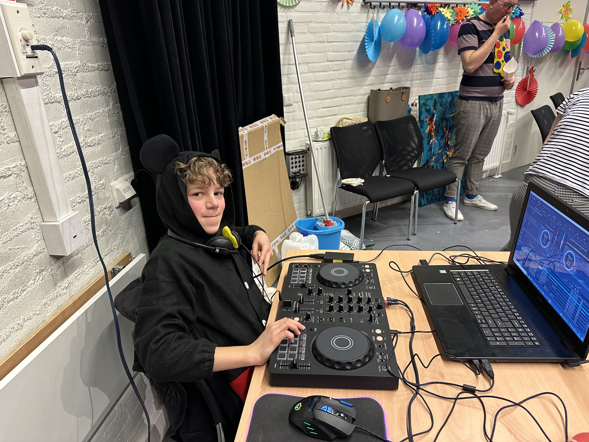
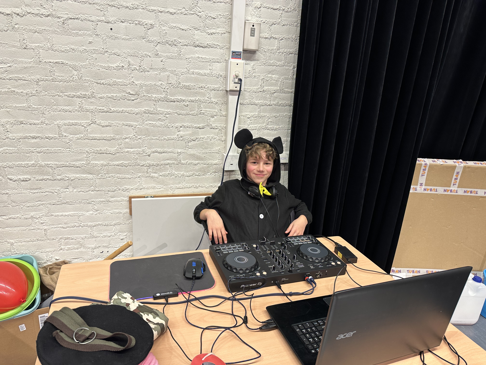
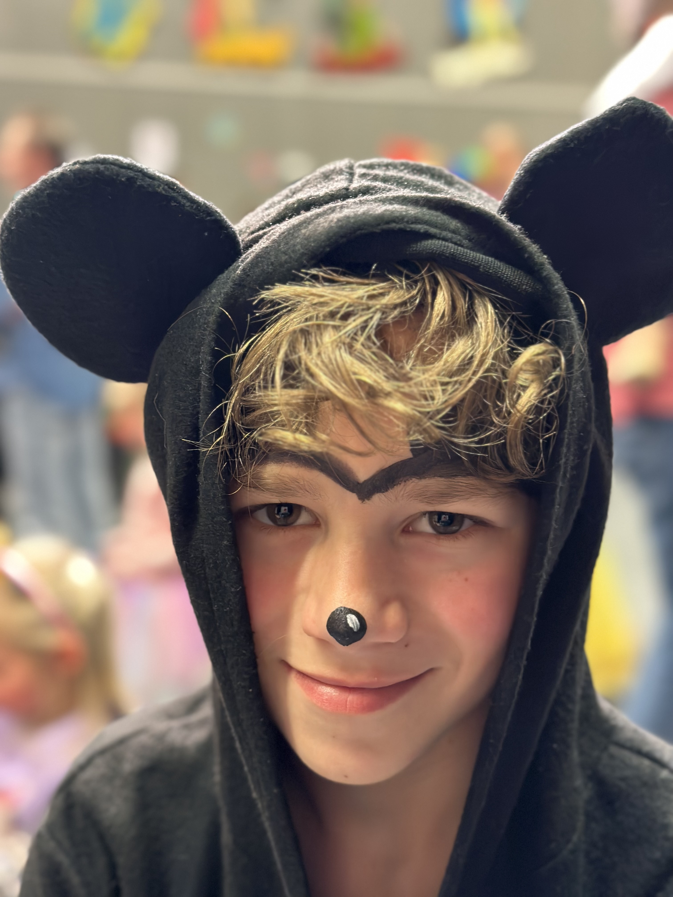
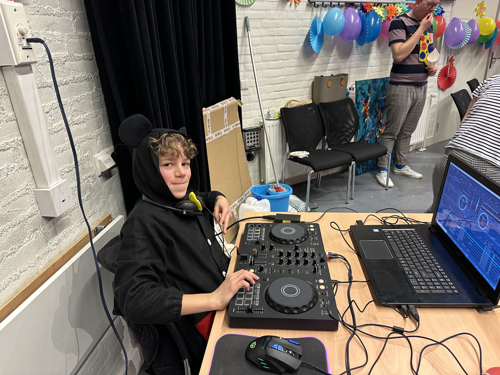
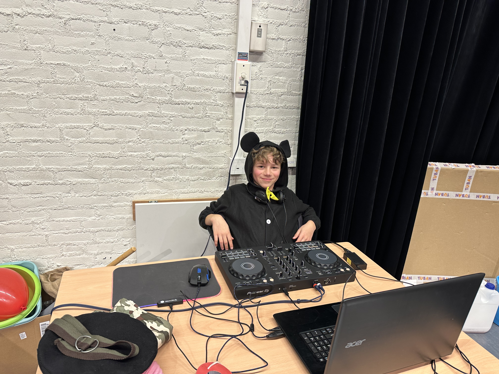
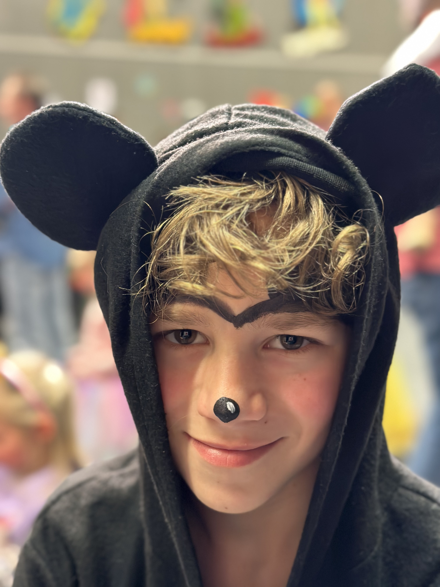
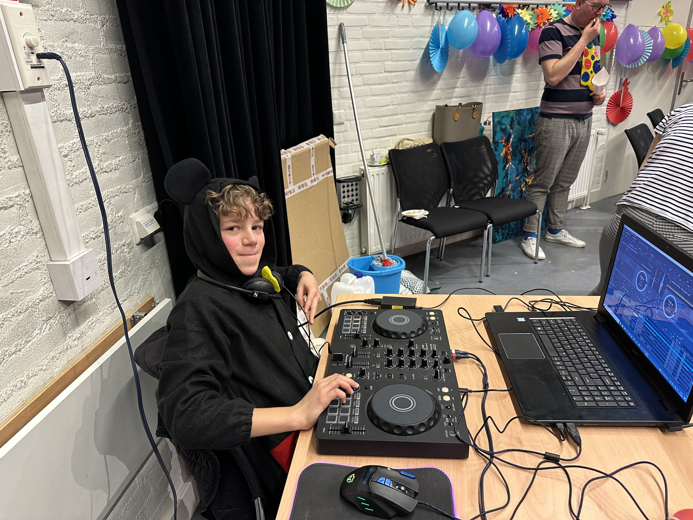
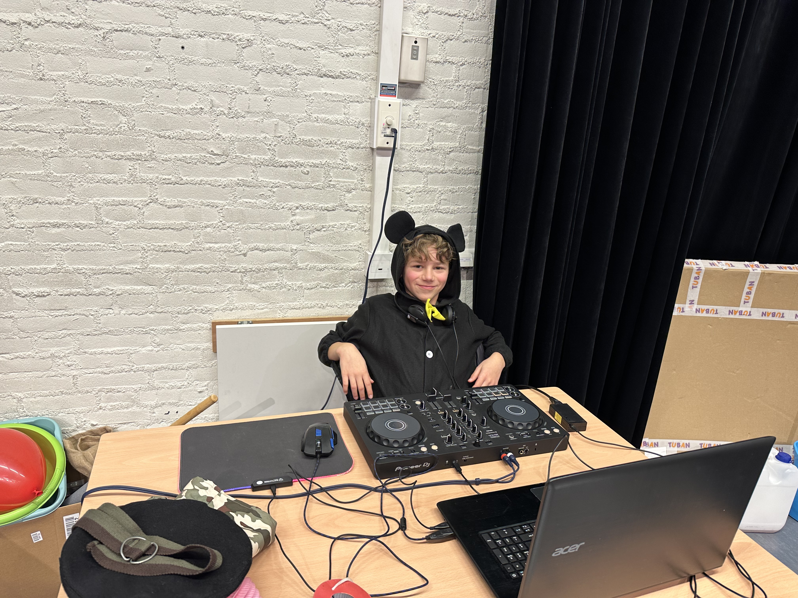
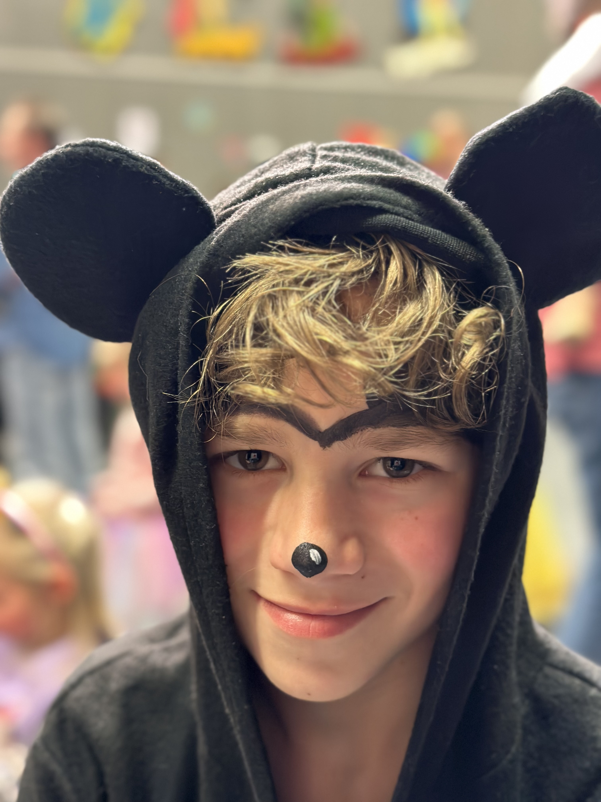

This was my 1st ever DJ Performance, I think one of the teachers asked me to play, it was a kids carnival event in my polish school, as it was very new for me to play publically, I didn't have smooth techniques, but I mixed some enjoyable music anyways so I think it was atleast a little okay. I dressed up as mickey mouse, I brought my mouse, mousepad, I didn't even have my dj-headphones yet, I had borrowed them from my uncle
which goes by the DJ name Andrew Core.
Here are the 1st pictures ever of my 1st performance


